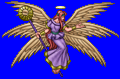
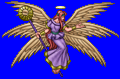
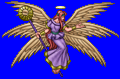
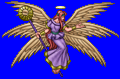

Height: ??? Weight: ???
Habitat: Heaven Origin: Europe
Meaning: Hebrew for "burning snake"
The highest of the nine classes in the Catholic angelic hierarchy. It appears human, but is divine in nature. Of its six wings, two cover its feet, two cover its face, and the other two are used to fly. It is often pictured carrying a sword or burning staff. In ancient times, it was drawn as a flying snake rather than a human, and were thought to have been created by Satan before his fall from grace.